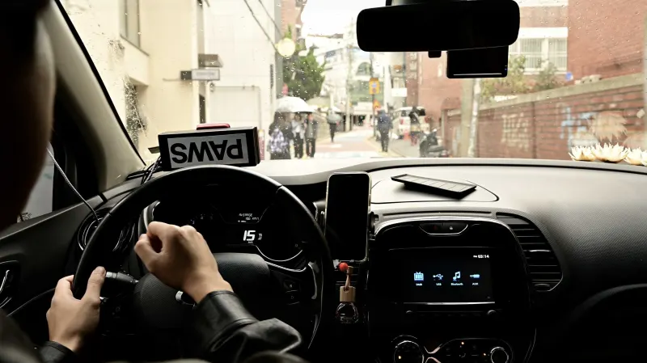
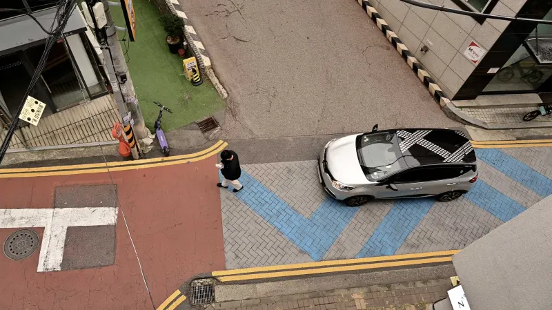
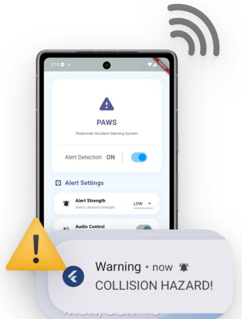
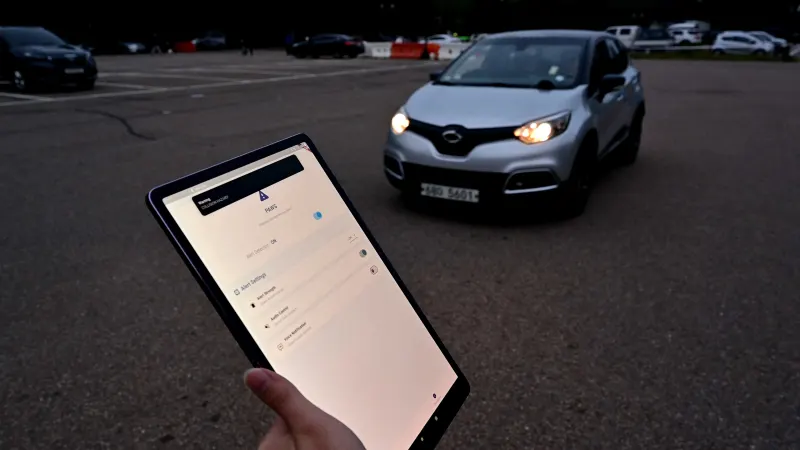
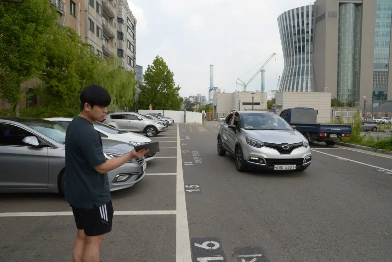
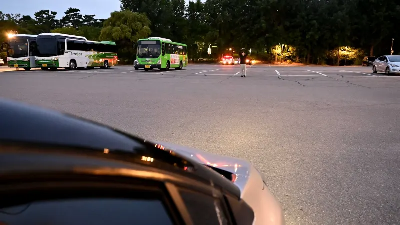
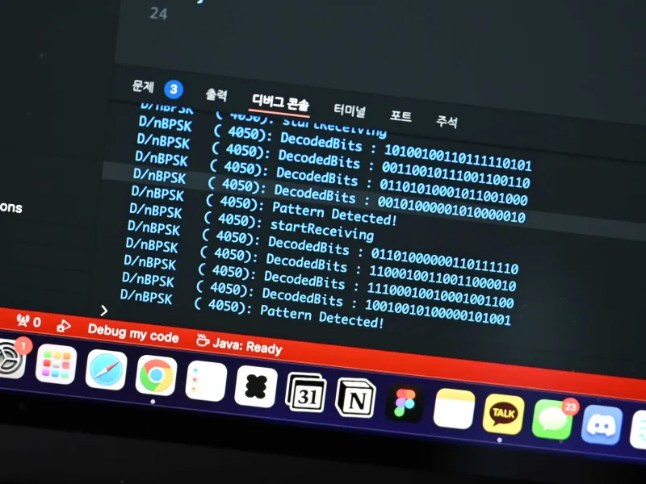
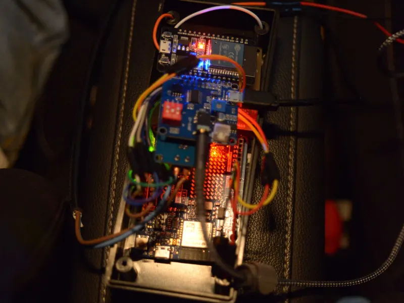

협업 프로젝트
PAWS
프리뷰
개요
- 프로젝트 기간
- 2024.03 – 2024.11
- 개발 인원
- 6명
- 프로젝트 목적
- 비가청 주파수 대역의 음향 물리계층을 활용하여, 단순 스마트폰 마이크와 스피커만으로
보행자에게 차량이 접근하고 있다는 경고 신호를 전달하는 E2E 안전 시스템 개발 - 프로젝트 내용
-
- 비가청 주파수 대역 활용 보행자-차량 간 통신
- PSK 변조, 19kHz 주파수 대역 활용
- 송신 모듈 (Arduino + ESP32), 수신 모듈 (모바일 앱)
- 모바일 앱을 통한 보행자 직접 위험 경고
- 휴대폰 마이크를 통한 경고 신호 수신 및 복조
- 경고 시 미디어 재생 강제 중지, 음성 알림
- 비가청 주파수 대역 활용 보행자-차량 간 통신
- 상세 역할
-
- 비가청 주파수 신호 물리계층 설계 (BPSK, 8bit frame, 128bps)
- 비가청 신호 수신용 안드로이드 앱 구현
- 비가청 신호 송신 제어용 ESP32 펌웨어 구현
- 성과
- 창의적종합설계경진대회 은상
- 2024 공과대학 창의적종합설계경진대회 은상 수상
- 최대 상대속도 30km/h · 최대 도달거리 21.3m · 도달 각도 전방 141°
기술 스택
- C/C++ 송신 모듈 펌웨어
- Arduino 송신 모듈 제어
- ESP32 BPSK 신호 생성
- Android 마이크 입력 (AudioRecord)
- Kotlin 실시간 신호 처리 · 복조
- Flutter 보행자 경고 UI
주요 기능
-
운전자가 보행자에게 경고 신호 발생
- 경적 사용이 제한되는 상황에서도 경고 가능
- 차량 속도와 연동된 신호 송신
핵심 구현 과제
- 차량용 송신 디바이스 개발

-
비가청 주파수를 통한 차량-보행자 통신
- 마이크 · 스피커만으로 통신, 별도 인프라 불필요
- 19kHz 대역 BPSK 변조
핵심 구현 과제
- 비가청 주파수를 활용한 신호 물리계층 설계
- 고신뢰성 · 저지연 신호 전달

-
스마트폰 앱을 통한 보행자 위험 인지
- 휴대폰 마이크로 경고 신호 수신 및 복조
- 경고 시 미디어 재생 강제 중지, 음성 알림
핵심 구현 과제
- 보행자용 전용 모바일 앱 개발

구현 과정
비가청 주파수 신호 물리계층 설계
BPSK · 19kHz 반송파 · 8bit/128bps 프레임, 차속 연동 도플러 보정
설계 시 고려한 점
- 적절한 전파 직진성 — 너무 강하면 차량 전방에만 도달하고, 너무 약하면 차량 후측방으로 의도치 않게 도달
- 강한 노이즈 저항성 — 휴대폰 마이크가 가청 대역 신호도 함께 받으므로, 실생활에서 노출되기 어려운 대역을 반송파로 선정
- 데이터 프레임 크기 — 너무 길면 송수신 응답이 길어지고, 너무 짧으면 전달 정확성을 확보하기 어려움
최종 설계
- 변 · 복조 — BPSK(Binary Phase Shift Keying)
- 변복조 구현이 단순해 하드웨어 · 펌웨어 친화적
- 두 심볼 간 거리가 멀어 낮은 비트 오류율(BER)
- 반송 주파수 — 19kHz
- 적절한 직진성과 송신 대역폭 확보, 18kHz 이상 비가청 대역은 실생활에서 노출되기 어려움
- 데이터 프레임 — 8bit, 128bps
- 1초에 128bit의 적절한 처리량, 오류 데이터를 검출하기 위한 최소한의 크기
- 도플러 보정 — 보행자와의 상대속도로 생기는 신호 왜곡을 줄이기 위해 차속에 연동해 반송 주파수를 편이
송수신 테스트



신호 송수신용 펌웨어 & 모바일 앱 개발
ESP32 BPSK 송신 펌웨어, Android FFT 기반 실시간 복조 앱
차량 쪽 송신 모듈은 차속에 맞춰 BPSK 신호를 만들어 스피커로 내보내고, 보행자 쪽 앱은 마이크로 받은 소리에서 신호를 복조해 경고를 띄웁니다.
전용 모바일 애플리케이션 (Kotlin + Flutter)
- Android 오디오 입력 및 버퍼링 —
AudioRecordAPI로 마이크 입력을 직접 제어하고, 샘플레이트 · 프레임 크기 · 버퍼 크기를 고정해 지연과 프레임 드랍 최소화 - 실시간 신호 처리 파이프라인 — AudioBuffer → FFT → 위상 비교기 → bitString → Decoder
- Flutter UI 연동 — 신호 처리 결과를 Platform Channel로 전달해 보행자 경고 UI, 상태 표시, 디버깅 뷰로 시각화
비가청 신호 생성 모듈 펌웨어 (ESP32)
- CAN 모듈로 받아온 차량 속도를 기반으로 반송 주파수 편이량 결정
- 18,500Hz ≤ f ≤ 19,500Hz 대역 내 BPSK 신호 생성 제어 (별도 오디오 DAC 하드웨어 사용)

